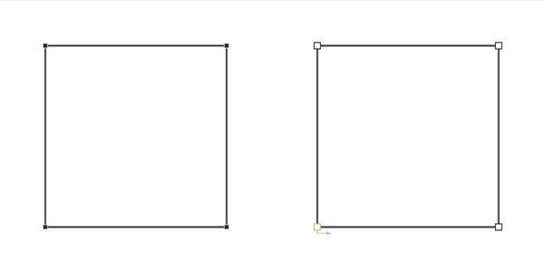
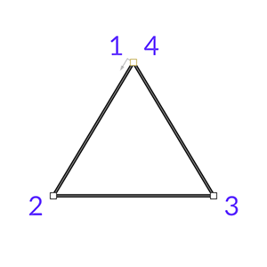

图形
简介
图形是可在视口中绘制，并使用关键帧和/或行为制作动画的图层。
图形
图形是一种图层，其中包含一个网格，可使用 Fill 和 Stroke 设置样式。
Cavalry 中的图形图层示例包括基本图形、文本图形和复制器。
粒子图形是这一定义的一个例外，目的是以高性能的方式处理大量粒子。
在 Cavalry 中，“图形”可以有两种形式：
- 图形：图形包含可编辑的自定义属性，用于更改其路径。例如，矩形包含 Size（Width/Height）属性，或者椭圆包含 Radius 属性。
- 可编辑图形：可编辑图形是一种非程序化图形，其中包含一个可编辑路径，可使用编辑图形工具进行编辑。
网格
网格是由以下组件构成的容器：
- Transform：其 Position、Rotation、Scale 与 Pivot。
- Fill：用于填充闭合路径内部的颜色。
- Stroke：用于路径轮廓的颜色。
- Path：由直线与曲线构成的几何图元。路径可包含多个轮廓，即路径中彼此不相连的部分。
- 子网格：父网格的子级。
网格可以包含子级，从而形成层级结构。例如，文本图形为每一行、每个单词以及每个字符各包含一个子级。由于每个网格都有自己的 Transform、Fill 和 Stroke，因此才可以按行/单词/字符为文本制作动画。
- 文本图形
- 行
- 单词
- 字符
- 单词
- 行
子网格变形器可用于通过设置要影响的层级深度来编辑每个子网格。这一思路同样适用于网格的 Fill、Stroke 和 Transform。
网格浏览器：
网格浏览器可用于展开图形的层级结构，并帮助理解其他能够操作其子网格的图层会产生怎样的影响。
路径
路径是由直线与曲线构成的几何图元。一个路径中可以包含多个互不相连的轮廓，从而实现挖孔等效果。构成路径的直线与曲线可以由各种不同的贝塞尔曲线、直线，或用于闭合轮廓、开启新轮廓的特殊标记组成。
路径针对实时绘制进行了优化，因此与可编辑路径不同，它无法通过在视口中移动点来编辑。应当通过 Shape 菜单将路径转换为可编辑图形，以便进行直接操纵和路径动画。
使用编辑图形工具选中时，路径与可编辑路径在视口中的外观不同。可编辑路径会显示更大的点，表示这些点可以被操纵。

可编辑路径
可编辑路径属于一种特殊图形图层，即可编辑图形。它是由可编辑点决定路径形状而构建的几何图元。路径的形状由带控制点的直线与曲线来描述（以曲线为核心的图元），而可编辑路径的形状则由带手柄的点来描述（以点为核心的图元）。正是这一区别使可编辑路径更易于使用，因为在艺术创作中，路径通常被理解为带贝塞尔手柄的点，而不是曲线。
可编辑路径的目的是让你可以通过编辑图形工具，在视口中轻松直观地绘制和编辑路径。
由于可编辑路径是视口中所渲染的实际优化路径的抽象表示，因此路径可见的点数可能与其实际点数不同。以这个简单的三角形为例：

一个具有 3 个点的三角形，在后台实际上由 4 个点构成，其中第一个点和最后一个点位于同一位置。
一个显示 3 个可见点、同时包含贝塞尔点的图形，实际上由 8 个点构成。

如果要使用网格浏览器查看图形的 Point Count，理解这一点很重要。
可编辑点
可编辑点通过多种位置和设置来决定可编辑路径的形状：
- Position
- In Handle Position
- Out Handle Position
- Weight Locked
- Gradient Locked
当 In Handle 与 Out Handle 均未设置时，该点将被视为角点。
Point Count 与 pointId：
注意不要将 Point Count 与 pointId 混淆。pointId 可被其他图层（复制器、约束等）用来将图形定位到其他图形的点上。第一个 pointId 是
pointId0，它依据视口中可见的点、沿路径方向递增，手柄会被忽略。